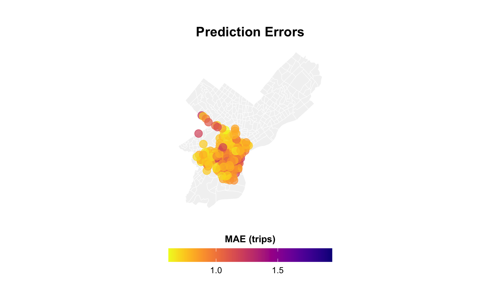
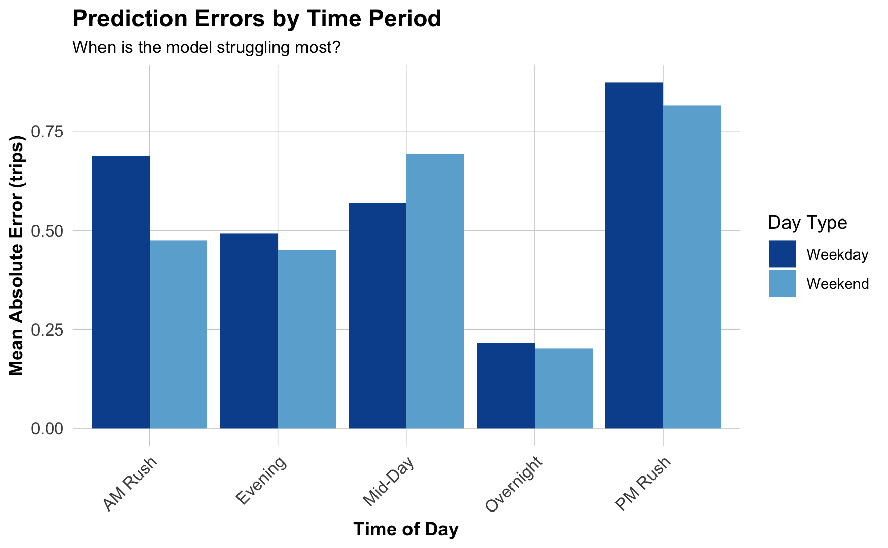
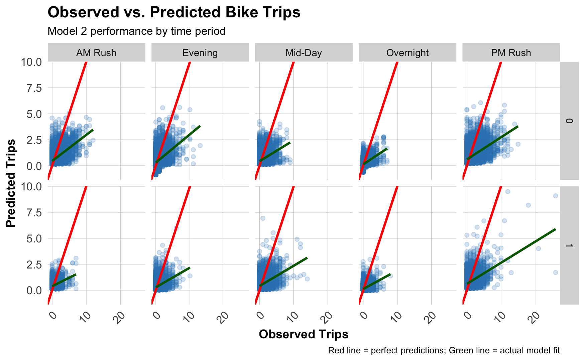

# Cross-sectional: One row per station
Station_A, May_2018, 4,250_total_trips
Station_B, May_2018, 2,100_total_trips
# Panel: One row per station-hour
Station_A, May_1_08:00, 12_trips
Station_A, May_1_09:00, 15_trips
Station_A, May_1_10:00, 8_trips
Station_B, May_1_08:00, 5_trips
Station_B, May_1_09:00, 7_tripsSpace-Time Prediction
Bike Share Demand Forecasting with Panel Data & Temporal Lags
Dr. Elizabeth Delmelle
2025-11-17
Part 1: The Space-Time Challenge
Real-World Problem: Bike Rebalancing
The dreaded empty bikeshare station:

- 7-9 AM: Residential areas empty out → Downtown fills up
- 11 AM-2 PM: Lunch rush redistributes bikes
- 4-6 PM: Reverse commute → Downtown empties
- Challenge: How do we get bikes where they’ll be needed before demand hits?
Why This Matters for Policy
Operational question:
“At 6:00 AM, which stations will run out of bikes by 8:00 AM?”
- Can’t wait for stations to empty before rebalancing
- Must predict demand 1-2 hours ahead
- Need to optimize truck routes based on forecasts
Your job: Build a system that predicts demand in space AND time
What Makes This Different?
Previous weeks (Weeks 5-7):
- Cross-sectional prediction: predict 2024 house prices
- Spatial features: crimes within 500ft, distance to downtown
- Spatial fixed effects: neighborhood baseline differences
This week:
- Panel data: Same stations observed over time
- Temporal features: What happened last hour?
- Space-time interaction: Different patterns by location AND time
Part 2: Understanding Panel Data
What is Panel Data?
Definition: Data that follows the same units over multiple time periods
Cross-sectional data:
- Each row = one observation
- House prices in 2024
- One snapshot in time
Panel data:
- Each row = unit × time period
- Station × hour combinations
- Repeated observations
Example: Bike Share Panel
Key insight: Now we can see how demand changes WITHIN stations over time
Panel Data Structure
| Station ID | Date-Hour | Trip Count | Temperature | Day of Week |
|---|---|---|---|---|
| 1 | 2018-05-01 08:00 | 12 | 65°F | Tuesday |
| 1 | 2018-05-01 09:00 | 15 | 67°F | Tuesday |
| 1 | 2018-05-01 10:00 | 8 | 69°F | Tuesday |
| 2 | 2018-05-01 08:00 | 5 | 65°F | Tuesday |
| 2 | 2018-05-01 09:00 | 7 | 67°F | Tuesday |
Each row = station-hour observation with features and outcome
Why Panel Data for Bike Share?
Station-specific baselines:
- Station A (downtown): High demand during work hours
- Station B (residential): High demand mornings/evenings
- Station C (tourist area): High demand weekends
Time-based patterns:
- Rush hour peaks
- Weekend vs. weekday differences
- Weather effects
- Holiday impacts
Panel structure lets us capture BOTH station differences AND time patterns
Part 3: Binning Data into Time Intervals
Why Bin the Data?
Raw trip data:
Trip 1: Started at 8:05:23 AM
Trip 2: Started at 8:07:41 AM
Trip 3: Started at 8:15:12 AM
Trip 4: Started at 8:23:08 AM- Problem: Every trip starts at a unique timestamp
- Can’t aggregate or find patterns at the second-level
- Solution: Group trips into uniform time intervals (bins)
Binning in Practice
Hourly binning:
Result:
- Trip at 8:05 AM → 08:00 bin
- Trip at 8:23 AM → 08:00 bin
- Trip at 9:07 AM → 09:00 bin
Now we can count: “Station A had 15 trips in the 8:00 AM hour”
Alternative: 15-Minute Bins
Finer temporal resolution:
Trade-offs:
- (+) More granular patterns (peak vs. off-peak within hour)
- (+) Better for short-term forecasting
- (-) More sparse data (some 15-min periods have zero trips)
- (-) More complex models
Today: We’ll use hourly bins for simplicity
Extracting Time Features
These become predictors:
- Rush hour indicator:
hour %in% c(7,8,9, 17,18,19) - Weekend indicator:
dotw %in% c("Sat", "Sun") - Holiday effects: Memorial Day weekend
Part 4: Temporal Lags
What Are Temporal Lags?
Core idea: Past demand predicts future demand
Spatial features (Week 6):
- Crimes within 500ft
- Distance to downtown
- Nearby amenities
Temporal features (This week):
- Demand 1 hour ago
- Demand 2 hours ago
- Demand yesterday (24 hours ago)
Intuition: If there were 15 trips at 8 AM, there will probably be ~15 trips at 9 AM
Creating Lag Variables
study.panel <- study.panel %>%
arrange(from_station_id, interval60) %>% # Sort by station, then time
group_by(from_station_id) %>%
mutate(
lag1Hour = lag(Trip_Count, 1), # Previous hour
lag2Hours = lag(Trip_Count, 2), # 2 hours ago
lag3Hours = lag(Trip_Count, 3), # 3 hours ago
lag12Hours = lag(Trip_Count, 12), # 12 hours ago
lag1day = lag(Trip_Count, 24) # Yesterday same time
) %>%
ungroup()Important: Lags are calculated WITHIN each station
Lag Variable Example
Station A on Monday:
| Time | Trip Count | lag1Hour | lag12Hours | lag1day |
|---|---|---|---|---|
| Mon 07:00 | 5 | NA | NA | NA |
| Mon 08:00 | 12 | 5 | NA | NA |
| Mon 09:00 | 15 | 12 | NA | NA |
| Mon 19:00 | 8 | 10 | 5 | NA |
| Tue 08:00 | 14 | 6 | 10 | 12 |
Interpretation: At Tue 08:00, demand was 14. Same time yesterday (Mon 08:00) was 12.
Why Multiple Lags?
Different lags capture different patterns:
- lag1Hour: Short-term persistence (smooth demand changes)
- lag3Hours: Medium-term trends (morning rush building)
- lag12Hours: Half-day cycle (AM vs. PM patterns)
- lag1day (24 hours): Daily periodicity (same time yesterday)
Model will learn which lags are most predictive for each station/time combination
Connection to Week 6: Spatial Features
Remember Week 6?
Part 5: Creating the Space-Time Panel
The Challenge: Missing Observations
Problem: Not every station has trips every hour
But we NEED:
Why? Lag calculations break if rows are missing
Creating a Complete Panel
Step 1: Calculate all possible combinations
Reality check: Do we have 446,400 rows? Probably not!
expand.grid() to the Rescue
# Create every possible station-hour combination
study.panel <- expand.grid(
interval60 = unique(dat_census$interval60),
from_station_id = unique(dat_census$from_station_id)
)
# Join to actual trip counts
study.panel <- study.panel %>%
left_join(
dat_census %>%
group_by(interval60, from_station_id) %>%
summarize(Trip_Count = n()),
by = c("interval60", "from_station_id")
) %>%
mutate(Trip_Count = replace_na(Trip_Count, 0)) # Fill missing with 0Now every station-hour exists, even if Trip_Count = 0
Joining Station Attributes
Each station has fixed characteristics:
# Station location, demographics from census
station_data <- dat_census %>%
group_by(from_station_id) %>%
summarize(
from_latitude = first(from_latitude),
from_longitude = first(from_longitude),
Med_Inc = first(Med_Inc),
Percent_White = first(Percent_White),
# ... other demographics
)
# Join to panel
study.panel <- study.panel %>%
left_join(station_data, by = "from_station_id")Result: Every row has station location + demographics
Adding Time-Varying Features
Some features change over time:
# Weather changes hourly
weather <- weather_data %>%
select(interval60, Temperature, Precipitation)
study.panel <- study.panel %>%
left_join(weather, by = "interval60")
# Create time features
study.panel <- study.panel %>%
mutate(
week = week(interval60),
dotw = wday(interval60, label = TRUE),
hour = hour(interval60),
weekend = ifelse(dotw %in% c("Sat", "Sun"), 1, 0)
)Final Panel Structure
What we have now:
- Every station-hour combination exists
- Trip counts (including zeros)
- Station fixed attributes (location, demographics)
- Time-varying features (weather, day of week, hour)
- Temporal lags (lag1Hour, lag1day, etc.)
Ready to model! But first… temporal validation
Part 6: Temporal Validation
Critical Callback: Week 7 Discussion
Remember when we talked about spatial lag models?
Spatial Lag Model (SAR):
\[Y_i = \rho \sum_j w_{ij}Y_j + \beta X_i + \varepsilon\]
Why NOT for prediction:
- Circular dependency (Y depends on Y)
- Can’t predict new areas
- Need neighbors’ outcomes
Our Approach Today:
\[Y_{it} = \alpha_i + \beta_1 X_{it} + \beta_2 Y_{i,t-1} + \varepsilon_{it}\]
Station fixed effects + temporal lags:
- \(\alpha_i\) = Station baseline
- \(Y_{i,t-1}\) = Past demand (not neighbors!)
- Can forecast future periods
Key difference: We use PAST outcomes as features, not NEIGHBOR outcomes
The Temporal Validation Problem
You CANNOT train on the future to predict the past!
** WRONG approach:**
This is predicting the past using the future!
Why This Matters
Real-world scenario:
It’s May 15, 2018. You need to forecast demand for May 16-31.
- You have data from: May 1-15 ✓
- You don’t have data from: May 16-31 (it hasn’t happened yet!)
- You must train on May 1-15 and test on May 16-31
Temporal Train/Test Split
# Split by time (week of year)
train <- study.panel %>%
filter(week < 19) # Weeks 1-2 of May (early period)
test <- study.panel %>%
filter(week >= 19) # Weeks 3-4 of May (later period)
# Fit models on training data only
model <- lm(Trip_Count ~ lag1Hour + lag1day + Temperature + weekend,
data = train)
# Evaluate on test data
predictions <- predict(model, newdata = test)This mirrors operational deployment: Predict tomorrow using yesterday’s patterns
Comparison to Spatial CV
Week 7: Spatial cross-validation
- Prevented spatial leakage
- Left out entire neighborhoods for testing
- Ensured model generalizes to new areas
This week: Temporal validation
- Prevents temporal leakage
- Holds out future time periods for testing
- Ensures model generalizes to future
Both are about out-of-sample generalization!
Part 7: Building Models
Model Progression Strategy
We’ll build 5 models, adding complexity:
- Baseline: Time + Weather only
- + Temporal lags: Add lag1Hour, lag1day
- + Spatial features: Add demographics, location
- + Station fixed effects: Control for station-specific baselines
- + Holiday effects: Account for Memorial Day weekend
Goal: See which features improve prediction accuracy
Model 1: Baseline (Time + Weather)
Predictors:
hour: Hour of day (0-23)dotw: Day of week (Mon, Tue, …, Sun)Temperature: Hourly temperaturePrecipitation: Rainfall amount
Captures: Daily and weekly cycles, weather effects
Model 2: + Temporal Lags
New predictors:
lag1Hour: Demand 1 hour agolag3Hours: Demand 3 hours agolag1day: Demand 24 hours ago
Hypothesis: Past demand predicts future demand
Model 3: + Spatial Features
New predictors:
- Demographics from census (station location characteristics)
- These are fixed over time but vary across stations
Captures: Neighborhood effects on demand
Model 4: + Station Fixed Effects
Station fixed effects:
- One dummy variable per station
- Captures station-specific baseline demand
- Controls for unobserved station characteristics
Why? Some stations are just busier than others!
Model 5: + Holiday Effects
Memorial Day weekend (May 28-29, 2018):
holiday: Current hour is during holidayholiday_lag1: 1 hour into holidayholiday_lag2: 2 hours into holiday
Captures: Disruption to normal patterns during holidays
Evaluating Models: MAE
Mean Absolute Error:
\[MAE = \frac{1}{n}\sum_{i=1}^{n}|y_i - \hat{y}_i|\]
Interpretation:
- “On average, our predictions are off by X trips”
- Lower MAE = better predictions
- Same units as outcome (unlike RMSE that emphasizes large errors)
Example: MAE = 5 means predictions are typically off by ±5 trips
Model Comparison (Hypothetical Results)
| Model | MAE (Test Set) | What Improved? |
|---|---|---|
| 1. Baseline | 8.2 trips | — |
| 2. + Lags | 6.5 trips | Temporal persistence |
| 3. + Demographics | 6.1 trips | Neighborhood effects |
| 4. + Fixed Effects | 5.3 trips | Station baselines |
| 5. + Holidays | 5.1 trips | Disruption events |
Biggest improvement: Adding temporal lags (8.2 → 6.5)
Part 8: Space-Time Error Analysis
Where Are We Wrong?
Not all errors are equal!
- High MAE at high-volume stations might be acceptable
- High MAE at low-volume stations might indicate systematic bias
- Spatial patterns in errors suggest missing features
- Temporal patterns suggest missing time dynamics
Question for operations: When do prediction errors cause bikes to run out?
Spatial Error Patterns
Map errors by station:
Temporal Error Patterns
When are we most wrong?
Observed vs. Predicted
Scatterplot by time of day:
Diagonal red line: Perfect predictions
Blue line: Our actual performance
Common Error Patterns
What you might see:
- Underpredicting peaks: Missing high-demand periods (rush hour)
- Weekend vs. weekday differences: Holiday patterns not fully captured
- Spatial clustering: Errors concentrated in certain neighborhoods
- Waterfront (leisure rides?)
- Downtown (tourist activity?)
- Transit hubs (commuter substitution?)
Critical question: Are errors related to demographics? (Equity concern!)
Errors and Demographics
# Join errors back to demographic data
station_errors <- station_errors %>%
left_join(
dat_census %>%
distinct(from_station_id, Med_Inc,
Percent_Taking_Public_Trans, Percent_White),
by = "from_station_id"
)
# Plot relationships
station_errors %>%
pivot_longer(cols = c(Med_Inc, Percent_Taking_Public_Trans,
Percent_White),
names_to = "variable", values_to = "value") %>%
ggplot(aes(x = value, y = MAE)) +
geom_point(alpha = 0.4) +
geom_smooth(method = "lm", se = FALSE) +
facet_wrap(~variable, scales = "free_x")Part 9: Policy Implications
Interpreting Results for Operations
For a bike rebalancing system:
- Prediction accuracy matters most at high-volume stations
- Running out of bikes downtown causes more complaints
- But: Is this equitable?
- Temporal patterns reveal operational windows
- Rebalance during overnight hours (low demand)
- Pre-position bikes before AM rush
- Spatial patterns suggest infrastructure gaps
- Persistent errors in certain neighborhoods
- Maybe add more stations? Increase capacity?
The Equity Question
Who benefits from accurate predictions?
Higher accuracy in:
- Downtown stations
- High-income neighborhoods
- Tourist areas
- Transit hubs
Lower accuracy in:
- Residential periphery
- Lower-income areas
- Newer stations
- Less transit access
Critical analysis: Are we reinforcing unequal service quality?
When Should We Deploy This?
Questions to consider:
- Is MAE = 5 trips “good enough” for operations?
- What are consequences of underpredicting by 10 trips?
- Do prediction errors disproportionately affect certain groups?
- What feedback loops might emerge?
- Poor predictions → bikes not available → people stop using → even less data
Next Steps to Improve
What could reduce errors?
- More temporal features:
- Precipitation forecast (not just current)
- Event calendars (concerts, sports games)
- School schedules
- More spatial features:
- Points of interest (offices, restaurants, parks)
- Transit service frequency
- Bike lane connectivity
- Better model specification:
- Interactions (e.g.,
weekend * hour) - Non-linear effects (splines for time of day)
- Different models for different station types
- Interactions (e.g.,
Part 10: Connection to Your Work
When Else Would You Use Panel Data?
Common policy applications:
- Transportation: Transit ridership over time
- Public safety: Crime patterns by beat over months
- Housing: Rent changes in neighborhoods over years
- Health: Disease incidence by zip code over weeks
- Education: School performance over academic years
- Environment: Air quality at monitoring sites over days
Anytime you have: Same units observed repeatedly over time
Lab Time!
Today’s Lab Exercise
Your task: Build space-time models for Chicago bike share
Working through the code:
- Load and explore data (10 min)
- Create panel structure with
expand.grid()(15 min) - Generate temporal lags (10 min)
- Build multiple models (20 min)
- Compare model performance (15 min)
- Analyze error patterns in space and time (20 min)
Discussion questions:
- Why do certain time periods have higher errors?
- Which demographic characteristics predict higher errors?
- How would you improve the model?
- Should this system be deployed? Under what conditions?
Code Walk-Through Preview
Key functions you’ll use:
# 1. Binning time
floor_date(datetime, unit = "hour")
# 2. Creating complete panel
expand.grid(station = stations, time = times)
# 3. Temporal lags
group_by(station_id) %>% mutate(lag1 = lag(outcome, 1))
# 4. Fixed effects
lm(y ~ x + as.factor(station_id))
# 5. Evaluation
MAE = mean(abs(observed - predicted))Getting Started
Open the lab file: week11_bike_share_lab.Rmd
Work in groups of 2-3
I’ll circulate to help with:
- Data structure questions
- Lag variable confusion
- Fixed effects interpretation
- Visualization challenges
Take your time - this is complex material!
Key Takeaways
- Panel data = same units observed over time
- Temporal lags capture demand persistence
- Train on past → test on future for temporal validation
- Station fixed effects control for baseline differences
- Space-time errors reveal both spatial and temporal patterns
- Policy question: When is “good enough” actually good enough?
- Equity concern: Do errors disproportionately affect certain groups?